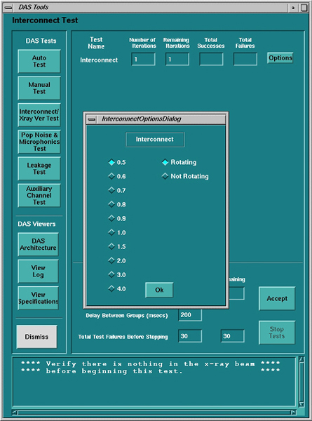
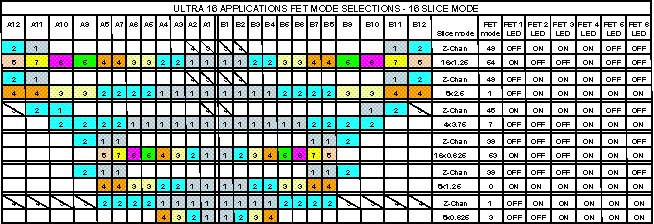
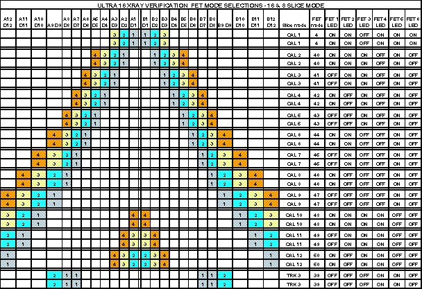
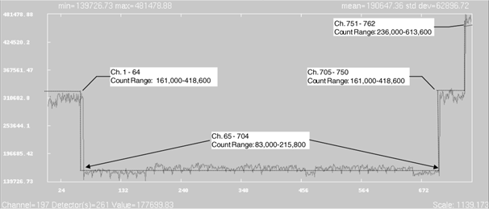
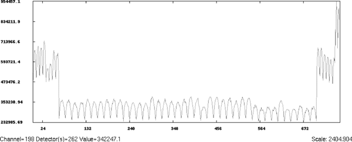
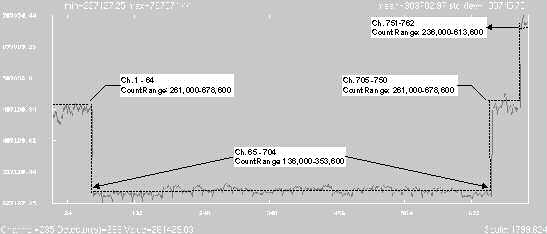
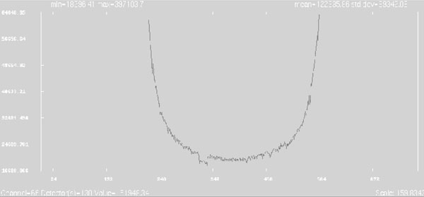
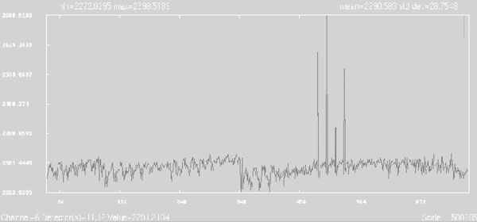

Operating Documentation
Direction 5224328-800, Rev# 5
Dir 5224328-800 LightSpeed 5.X HP60 Limited Access Service
Methods - Adv.
Operating Documentation |
Both “Interconnect” and “X-Ray Verification” tests are performed ( Illustration 1). Nineteen (19) scans are performed. Scans “CAL1 through TRK3' are used for the Interconnect test. Scans 16 x 0.625, 16 x 1.25, 4 x 3.75, 8 x 1.25, 8 x 2.50, and 8 x 0.625 are used for the X-Ray Verification tests.
Illustration 1: Interconnect/X-Ray Verification Test

Table 1: XRAY Ver/Interconnect Test Scans
| Slice Thickness | DAS Gain | X-Ray | Filter | Focal Spot | Scan Time | Gantry Rotation |
|---|---|---|---|---|---|---|
| 16 x 0.625 | 5 | 120KV/40mA | Air | Small | 0.5 Sec. 820 views | Stationary, 0° |
| 16 x 1.25 | 5 | 120KV/40mA | Air | Small | 0.5 Sec. 820 views | Stationary, 0° |
| 4 x 3.75 | 13 | 120KV/40mA | Air | Small | 0.5 Sec. 820 views | Stationary, 0° |
| 8 x 1.25 | 9 | 120KV/40mA | Air | Small | 0.5 Sec. 820 views | Stationary, 0° |
| 8 x 2.50 | 9 | 120KV/40mA | Air | Small | 0.5 Sec. 820 views | Stationary, 0° |
| 8 x 0.625 | 3 | 120KV/40mA | Air | Small | 0.5 Sec. 820 views | Stationary, 0° |
| CAL1 | 5 | 120KV/40mA | Air | Small | 0.5 Sec. 820 views | Stationary, 0° |
| CAL2 | 5 | 120KV/40mA | Air | Small | 0.5 Sec. 820 views | Stationary, 0° |
| CAL3 | 5 | 120KV/40mA | Air | Small | 0.5 Sec. 820 views | Stationary, 0° |
| CAL4 | 5 | 120KV/40mA | Air | Small | 0.5 Sec. 820 views | Stationary, 0° |
| CAL5 | 5 | 120KV/40mA | Air | Small | 0.5 Sec. 820 views | Stationary, 0° |
| CAL6 | 5 | 120KV/40mA | Air | Small | 0.5 Sec. 820 views | Stationary, 0° |
| CAL7 | 5 | 120KV/40mA | Air | Small | 0.5 Sec. 820 views | Stationary, 0° |
| CAL8 | 5 | 120KV/40mA | Air | Small | 0.5 Sec. 820 views | Stationary, 0° |
| CAL9 | 5 | 120KV/40mA | Air | Small | 0.5 Sec. 820 views | Stationary, 0° |
| CAL10 | 5 | 120KV/40mA | Air | Small | 0.5 Sec. 820 views | Stationary, 0° |
| CAL11 | 5 | 120KV/40mA | Air | Small | 0.5 Sec. 820 views | Stationary, 0° |
| CAL12 | 5 | 120KV/40mA | Air | Small | 0.5 Sec. 820 views | Stationary, 0° |
| TRK3 | 5 | 120KV/40mA | Air | Small | 0.5 Sec. 820 views | Stationary, 0° |
The Interconnect Test is an automatic data collection mode to logically sequence through each switchable FET configuration, and the results compared to a known spec for each DAS channel. All the different FET configurations are defined with corresponding expected output values. The function of this diagnostic is to verify detector output across each row and combination of rows in respect to application slice modes. It also helps in determining if a detector is bad before removing it as a replacement.
This test will need to enable x-ray with a large aperture as to flood across all rows of the detector. Because of x-ray and optional rotation, the initiating of x-ray or mechanical movement cannot be started by InSite. The scan parameters are defined for each scan using a DDC protocol. There are 19 various modes across both Side A and Side B of the detector:
The output from each “scan” is compared to each other for relative equal outputs (with some margin for cell output differences). The comparison is each cell output for each channel to determine if a cell has no output (FET did not select) or more than expected output (FET combined more cells together than requested).
The means are to be processed and compared to specification for each row of each slice. The data is processed OFFSET CORRECTED and compared to spec for channel-to-channel spec as well. as channel means.
If failed channel follows same channel number and same row for two or more scan modes, then the error is reported, Exam/series/scan/channel/Row/Board #/Interposer. Suggested possible problem areas could be converter board or flex-backplane interface. Suggest swapping converter boards and re-running the test to confirm if problem follows board.
If failed channel between two adjacent scan modes stays on the same channel, but changes rows, error is reported as a failure with Exam/series/scan/channel/Row/Board #/Interposer. For single channel failure, suggested possible problem is possible detector channel FET is bad. For 32 channel pattern (same side and both rows), then possible cause is module FET set-up, check flex connection on that specific Interposer. For chassis boundaries or just channels 763-768, check cabling, and DCB FET control lines.
Illustration 2: X-Ray Verification Scan Modes for 16 Slice

Illustration 3: Interconnect Test Scan Modes for 16 Slice

The following plots are examples of what the user might see when plotting the X-Ray Verification and Interconnect scans using the Scan Analysis MSD plot function. It is absolutely necessary to verify specifications using the tables found in DASTOOLS.
Technique: Air Scan / 120KV / 40mA / 4 x 5.00 / 1 sec Rotating/Air Filter / Small Spot / DAS Gain 31
| NOTE: | This plot and specs are the same for each row when all rows are connected from the detector to the DAS. |
Data is plotted “Offset Corrected”.
Illustration 4: 4 x 5 Spec. Limits (Means Example)

Mean plot with ‘A’ side of the detector physically disconnected from DAS.
Technique: Air Scan / 120KV / 40mA / 4 x 5.00 / 1 sec Rotating Air Filter / Small Spot / DAS Gain 31
| NOTE: | This plot displays Row 1B when performing x-ray verification on the ‘B’- side of the detector only with the ‘A’- side flexes disconnected from the DAS. The sinusoidal wave pattern of the means counts is due to the capacitive charging/discharging of the unterminated ‘A’- side detector diodes bleeding over to Row 1B. This is a normal plot in this detector/DAS configuration. Data from the disconnected ‘A’- side is not specified, due to unknown results from open inputs to the DAS. |
Illustration 5: “A” side Disconnected (Means Example)

Technique: Air Scan / 120KV / 40mA / 4 x 1.25 / 1 sec Rotating Air Filter / Small Spot / DAS Gain 5
Illustration 6: 8 x 1.25 Spec. Limit (Means Example)

| NOTE: | This plot and specs are the same for each row when all rows are connected from the detector to the DAS. |
Illustration 7 shows an obvious count difference than what is expected. The channels correspond to detector module boundaries, and the detector was suspect of being bad. Do not replace the detector until further analysis has been completed.
A weak detector cell or module may or may not be a problem. The best way to determine if a detector cell or module is ok, take x-ray verification scans and analyze the channels in suspect, and compare them to the minimum and maximum expected counts range. As long as they are within the specifications, then the “weaker” cell or module is acceptable.
Illustration 7: “Weak” Detector Module (Means Example)

Illustration 8 shows an offset means plot. The four-spike pattern is sometimes typical as a result of an individual pre-amp output either more or less than the other pre-amps on a converter board.
These spikes may or may not be normal. To check, evaluate the means counts of each spike. If the means count value is within the offset means specification, then the pre-amp (or converter board) is still good. If the means fails spec, swap boards with a known good board, verify spikes follow board, and then replace the converter board.
Illustration 8: Converter Board Pre-Amp Pattern (MSD Plot showing 4 spike pattern)
